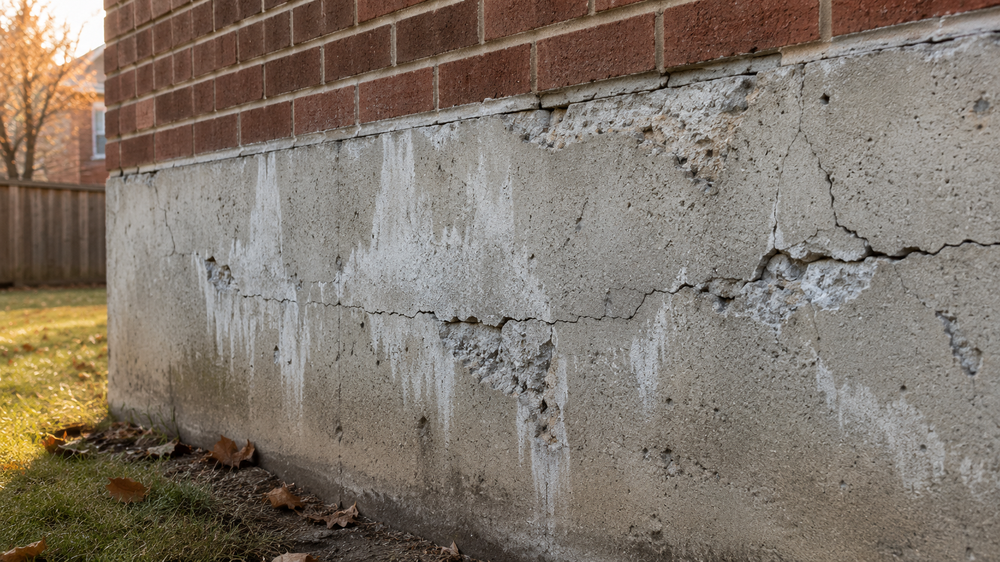
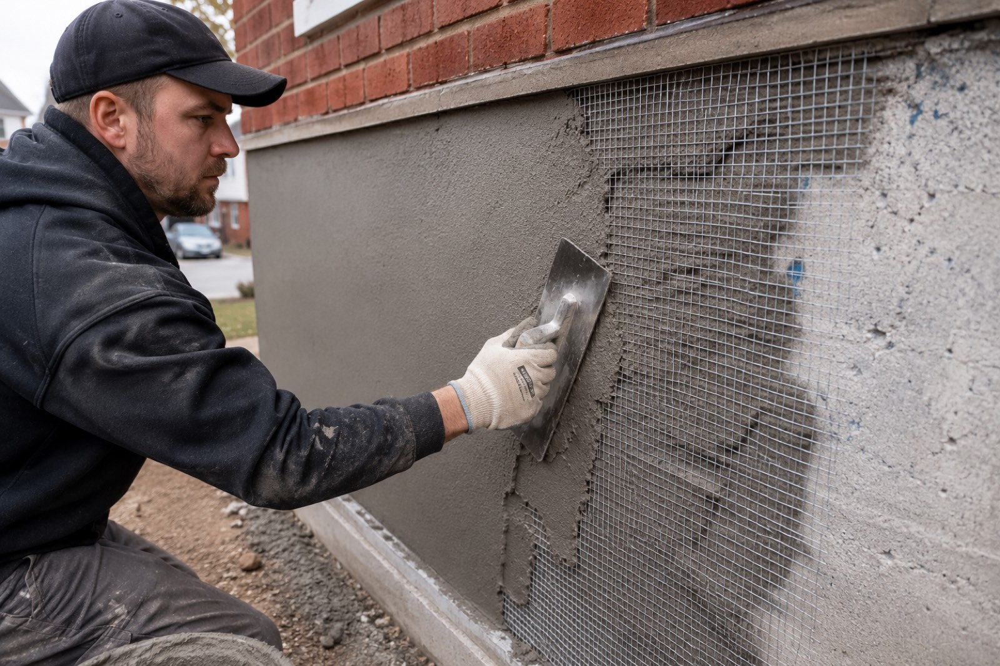
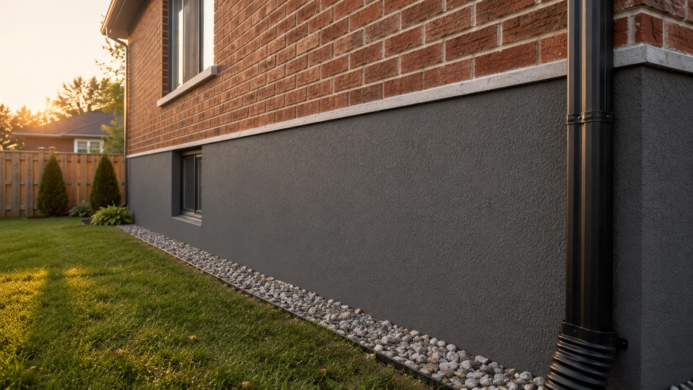

Walk around the side of almost any GTA home and look at the strip of exposed concrete between the grass and the brick. That's the part of your foundation that sticks up above grade. And on most homes, that strip is in worse shape than anywhere else on the house — cracked, flaking, water-stained, sometimes with chunks missing.
That's parging failure. And it's not just a curb-appeal problem. It's how water gets into your foundation.
If you've spotted damage on yours, the smart move is to fix it now — before another Toronto winter turns a $1,500 cosmetic repair into a $15,000 structural one. Here's the full picture.
What Is Parging, Exactly?
Parging is a thin coat of cement-based mortar — usually 3/8" to 1/2" thick — applied to the exposed concrete or concrete-block foundation wall above ground level. It's there for two reasons:
- Protection. Bare concrete and especially concrete block is porous. Without a sealing layer, water soaks in, freezes, expands, and breaks the wall down from the outside in. Parging is the waterproof skin that stops that cycle.
- Aesthetics. Raw foundation walls are ugly — uneven, full of form lines, sometimes patched in different shades. Parging gives you a clean, uniform surface that finishes the house properly.
Originally most GTA homes were parged with a basic lime-and-cement mortar mix. That worked fine for a few decades but lime-based parging eventually fails — and once it starts failing, it goes fast. The good news: modern parging materials are vastly better, and a proper installation now will outlast the original by 2–3×.

How to Tell If Your Parging Is Failing
You don't need an inspector to spot this. Walk around your home and look for any of these:
- Cracking. Hairline cracks tracking horizontally are freeze-thaw. Diagonal cracks at corners can be settlement. Either way, water is now finding its way in.
- Spalling or flaking. Chunks coming off, often near the grade line where snow piles sit in winter. This is the parging actively delaminating from the wall behind it.
- Bulging or hollow sections. Tap the wall lightly with a knuckle. Solid sections sound like a dull thud. Failed sections sound hollow — that's air between the parging and the concrete underneath. Once it's hollow, it's a matter of months before it pops off.
- White stains (efflorescence). The chalky white streaks running down your foundation are mineral salts being pulled out of the wall by moisture. It's a tell-tale sign water is moving through the concrete continuously.
- Brown or rust staining. If you see this, water has reached rebar or other steel embedded in the foundation. That's the most expensive type of damage to fix and the one you most want to catch early.
If you can pull pieces off with your fingers, or hear a hollow tap anywhere along the wall, that section needs to come off and be re-parged this season. Patching over failed parging is one of the most common mistakes we see — it always fails again, usually within one winter.
Why Pre-Winter Is the Right Time
This is the part most homeowners get wrong. They notice damage in November, decide to deal with it in the spring, and by April the damage has tripled. Here's why that happens:
Existing failing parging is a water funnel. Every hairline crack, every hollow section, every bulge is a pathway for water to get behind the parging and sit between the parging and the foundation. The first hard freeze turns that water into ice — and ice expanding behind a 3/8" layer of mortar has no problem popping it off the wall.
Once it pops off, the bare foundation underneath is now exposed. That concrete or block was never meant to handle direct weather. It absorbs water, freezes, spalls, and starts losing material. The damage that was cosmetic in October is structural by March.
Parging materials need cure temperatures above 5°C, ideally 10°C+. Once nighttime lows are consistently below 5°C — usually by mid-October in the GTA — proper installation gets much harder. Heating tents and admixtures help but cost more and limit which products can be used. The simple installation window in Toronto closes around the third week of October.
Translation: if you've spotted damage now, you have a comfortable window through summer and early fall to get the work done properly. If you wait until next year, you're rolling the dice on what a Canadian winter does to an already-compromised wall.

What We Use (And Why It Lasts)
Parging is one of those jobs where the materials matter enormously, but the prep matters even more. Here's the actual process we follow.
1. Honest Diagnosis First
Before anything else, we figure out why the existing parging is failing. Is it just age? Bad original installation? A drainage problem dumping water into the wall? Structural movement? Patching over the symptom while ignoring the cause is how parging fails twice. The fix has to address the root cause.
2. Removal of All Failed Material
Anything loose, hollow, cracked through, or bulging has to come off. Every time. We've never had a job where "patching the bad spots" worked long-term. The cost difference between full removal and partial removal is small — the durability difference is enormous.
3. Substrate Repair
If the underlying concrete or block is damaged — spalled corners, cracks, missing material — that gets repaired with structural mortar before any new parging goes on. Otherwise you're putting a finish coat on a moving target.
4. Mesh Reinforcement on Damaged Sections
On sections with previous cracking, settlement evidence, or any sign the wall has been moving, we install galvanized lath or fibreglass mesh before the parging goes on. The mesh distributes any future movement across a much wider area, which dramatically reduces the chance of new cracks telegraphing through.
5. Polymer-Modified Parging Mortar
This is the upgrade that makes the biggest difference over original lime-based parging. Polymer-modified mortar bonds dramatically harder to the substrate, has 3–5× the flexural strength, and resists water penetration far better than traditional mixes. It's also much more freeze-thaw resistant — which, in the GTA, is the only metric that really matters long-term.
6. Two-Coat Application
A scratch coat (rough-finished base layer) followed by a finish coat after the first has set. Single-coat parging is faster and cheaper — and it always cracks. Two coats is how you get a 20-year wall.
7. Proper Cure Window
Parging needs to cure slowly to develop full strength. We schedule the job when the forecast supports that — no installation right before a heat wave or a hard freeze. This is one of the reasons we won't push past mid-October in the GTA without a very good reason.
Beyond Standard Parging: The Upgrade Options
Not every job is just a straight repair. If you're already pulling the old parging off, this is the right time to think about whether you want to upgrade the look. The cost difference is much smaller than you'd think.
Decorative Cement Overlay
The same Jewelstone-style decorative overlay we apply to porches and pool decks can be applied to foundation walls. You can have a stamped flagstone finish, ashlar slate pattern, or fine-textured contemporary look on the foundation strip — turning the part of your house most people ignore into a feature that lifts your whole curb appeal. Same freeze-thaw resistance, same warranty, just a finish upgrade over plain parging.
Cement Stucco
Traditional Portland-cement stucco gives a more architectural finish — heavier texture options, more pattern flexibility, and excellent durability. It's a great match for homes with stucco upper walls where matching the foundation to the rest of the house makes design sense.
Acrylic Stucco / Modern Plasters
Acrylic-modified stucco systems and modern designer plasters give a smoother, more contemporary look with vastly improved crack resistance versus traditional stucco. Worth considering for newer builds or full home re-finishes where you're trying to achieve a modern aesthetic across the whole exterior.
"We figured we'd just slap a coat of fresh parging on and call it done. The Artisan Coat crew showed us where the old layer was already separating in three places — invisible from outside. They redid it properly with mesh and a polymer mix. Two winters later, no new cracks at all."
— Homeowner, Etobicoke
What It Costs
Parging cost in the GTA depends on three things: how much wall you're treating, how much old material has to come off, and what finish you're going with. A few realistic reference points:
- Standard parging repair on a typical detached home: usually a single-day or two-day job, in the low-to-mid four figures depending on linear feet and prep required.
- Full-perimeter re-parging with mesh and polymer-modified mortar: mid four figures for a typical bungalow, more for a larger two-storey with a fully exposed foundation strip.
- Decorative overlay or stucco finish upgrade: a modest premium over standard parging — usually less than 20–30% extra, but the visual impact is substantial.
Compare those numbers to foundation replacement — which is what you end up paying for if water keeps reaching the wall and the concrete itself starts to fail. Once we're into excavation and structural repair, the budget moves into the high five figures fast. Parging is the cheap insurance against that.

Common Mistakes We Fix Every Year
- Patching over failed parging. The new patch always pops off with the old layer underneath it. Full removal of failed material is non-negotiable.
- Skipping the mesh. No-mesh parging cracks again within 2–3 winters wherever the wall flexes. Mesh is cheap and it's the single biggest durability upgrade.
- Hardware-store ready-mix. Generic parging mix without polymers bonds poorly and absorbs water. Save the $30 you'd save and lose the whole job to the next winter.
- Sealing right after. Fresh parging needs to cure before any sealer goes on — usually 28 days minimum for full strength. Sealing too early traps moisture and causes blistering.
- Ignoring drainage. If a downspout is dumping water at the wall, or the grade slopes toward the house, the parging is going to fail again no matter how well you install it. Fix the drainage too, or fix the parging twice.
Resurface vs. Replace — The Honest Answer
Almost every parging job in the GTA is a candidate for resurfacing over replacement. The reasons:
- The structural concrete behind the parging is usually fine — it's only the cosmetic parging layer that's failed.
- Resurfacing costs a fraction of foundation work.
- Modern polymer-modified parging outlasts the original 2–3×.
- You can finish it however you like — plain, decorative overlay, stucco, modern plaster.
The only time we recommend going beyond parging is if we find evidence of structural foundation issues during the assessment — settlement cracks running deep into the concrete, water actively penetrating the basement, or visible rebar corrosion. In those cases we tell you honestly and refer you appropriately. Most homes don't have those problems. Most homes just have tired old parging that needs to be done right one time, and then it's good for another two decades.
The Bottom Line
If you've spotted parging damage, the right move is to book the assessment now and get it done before the cold sets in. The work itself isn't expensive. The work you'd have to do after the foundation gets damaged is. And the window to do it properly in the GTA closes by mid-October every year.
Send us a few photos on WhatsApp and we'll come back with a rough quote and a timeline the same day. If it's a candidate for a decorative upgrade, we'll show you the options. If it's a structural problem in disguise, we'll tell you that too. Either way you'll know exactly where you stand.